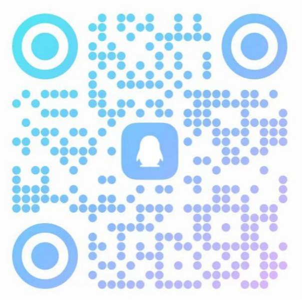

学院通知 · 竞赛比赛
关于“大川小思”朋辈学业辅导团队2025—2026学年秋季学期招新的通知
发布时间：2025-07-14
各学院（系）、各位同学： 为满足日益增长的本科生朋辈学业指导需求，学工部指导的“大川小思”朋辈学业辅导中心拟于暑期在全校全日制学生中新选聘朋辈学业导师。现将招新相关事项公告如下： 第一部分 招募对象 一、招募对象 四川大学优秀全日制在读本科生、研究生。 二、相关保障 1. 任期满一年，可颁发任职证书； 2. 按相关规定给予志愿时长认定或勤工助学补贴； 3. 提供相关专业培训； 4. 参加“大川小思”年度评优，获评者将获得荣誉证书。 第二部分 招募岗位及条件 一、朋辈学业导师 （一）基本条件 1. 思想态度端正，热爱祖国，拥护中国共产党，无违法违纪记录； 2. 积极乐观，具有较好的语言表达与交流沟通能力，愿意帮助学弟学妹们排忧解难，给予鼓励和帮助； 3. 具有热心、耐心、责任心及合作精神，积极参与群内答疑、微课、推文撰写、一对一咨询、团体辅导等朋辈学业辅导工作； 4. 本科生必修课成绩排名专业排名前30%，研究生酌情参考； 5. 2024级及以上本科生（包括降转到2025级）或2025级及以上的研究生。 （二）具体岗位及要求 1.数学组： 6 人 人数 招募需求及条件 6 1. 学习成绩优异，尤其在数学学科成绩突出。所修公共数学课（微积分、线性代数、概率统计）成绩均在 85 分以上； 2. 在近两年的四川大学数学竞赛中获奖者优先。高年级同学在全国大学生数学竞赛、全国大学生数学建模大赛、美国大学生数学建模竞赛等比赛中获奖者优先。对于数学课程有优秀笔记、题型整理者优先； 3. 擅长交流与讲解，对数学学习有体系有方法，对大学数学的学习有较为明确的规划，能够给同学们提出合理、科学、有效的数学学习建议以及相关竞赛备考建议。 2.学习效能组： 8人 人数 招募需求及条件 8 1. 在本学科的专业课学习方法、时间规划等方面有自己独到的见解 ——学习方法方面包括笔记（电子 / 手写）、期末备考、平时学习与复习、学习资料的收集与利用等，时间规划方面包括日常时间规划管理、时间利用效率提升等，获相关个人表彰荣誉者优先； 2. 曾获得国家奖学金或高水平社会奖学金者优先。 3.英语组： 1 1 人 方向 人数 招募需求及条件 四六级辅导方向 3 在四六级考试、雅思托福、 GRE 、英语竞赛中取得较好成绩的同学，对英语有知识体系和学习方法，满足下列一项者： 1. 四级 650 分以上或六级 610 分以上； 2. 雅思 7.5 分及以上； 3. 托福 108 分及以上（托福高分者优先考虑）； 4. GRE 325+4 及以上； 5. 全国大学生英语竞赛一等奖及以上； 6. 外研社系列比赛中取得省国级奖项； 7. 英语专业，专业成绩优异，对于英语学习有系统性的方法，具有实践可借鉴意义。 雅思、托福、 GRE 方向 3 英语竞赛获奖者 3 英语专业成绩优异者 2 4.科研竞赛组： 12 人 方向 人数 招募需求及条件 文法类 （较为需要法学院、外国语学院、公共管理学院、马克思主义学院等的同学） 3 202 3 级及以上本科生或 202 5 级及以上研究生。 （一）科研方向： 各方向招募在科研方面具有较为丰富经验的同学，优先招募具有一定学术成果的同学，文法经管方向优先招募科研经历丰富的同学，符合以下条件者优先考虑： 1. 有“大创”等学生自主型科研经历，并负责或参与省级及以上项目； 2. 公开发表的学术论文的第一作者（或导师第一作者学生第二作者）、专利的第一发明人（或导师第一发明人学生第二发明人）； 3. 参加高水平学术会议并承担重要的角色。 （二）竞赛方向： 1. 各方向招募具有高水平学术科技竞赛经验，并获得一定奖项的同学，优先考虑获得《全国普通高校大学生竞赛分析报告》及学院重点组织参与的竞赛目录内的省级及以上奖项获得者。 理科类 （较为 需要 化学学院、生命科学学院的同学） 3 工科类 （较为 需要 建筑与环境学院、化学工程学院、轻工科学与工程学院、高分子科学与工程学院、网络空间安全学院、灾后重建与管理学院、空天科学与工程学院、生物医学工程学院、碳中和未来技术学院、新能源与低碳技术研究院的同学） 2 医科类 （较为 需要 华西口腔医学院、华西公共卫生学院、华西药学院的同学） 4 5.升学组：32人 方向 人数 招募需求及条件 保研 16 专业不限，通过推免研究生被理想院校拟录取，例如获得保研夏令营优秀营员等，对大学学业规划、高效学习方法有心得。有突出竞赛、科研或实习经历者优先考虑。 考研 8 专业不限，通过考研被理想院校录取，在初试或复试中表现突出，对大学学业规划、高效学习方法有心得。有突出竞赛、科研或实习经历优先考虑，研究生优先考虑。 留学 8 专业不限，积极准备留学或被理想院校录取，且有一定的国（境）外访学经验者。 面向毕业年级（ 四年制2022级、五年制2021级 ） 本科生以及各年级研究生 第三部分 报名及考核方式 一、报名方式 请于2025年7月31日24:00 前加入“大川小思 2025暑期招新对外答疑QQ 群”，并 填写群内报名问卷 ，群号：543274638，群二维码： 二、考核方式 1.资料初审。 由学工部统一组织，“大川小思”朋辈学业辅导中心结合考核材料完成度及报名表填写情况，对报名人选进行初步审核，审核结果以及复试通知计划于8月10日前以邮件形式发送。 2.复试面试。 重点考察候选人的沟通表达、临场应变、专业素养等方面的能力，考核通过者将进行3个工作日公示，公示无异议后，由学工部聘任为四川大学 “大川小思”朋辈学业辅导中心朋辈学业导师。 欢迎同学们积极参与！ 党委 学生工作部 （ 处 ） 202 5 年 7 月 1 4 日
